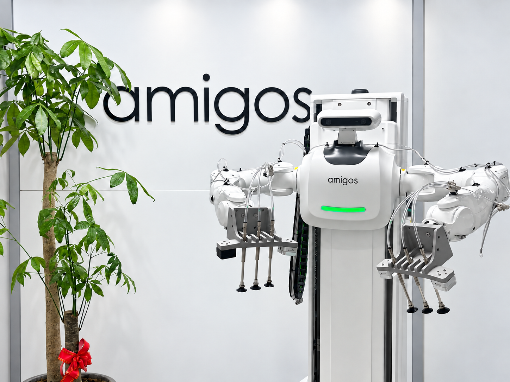
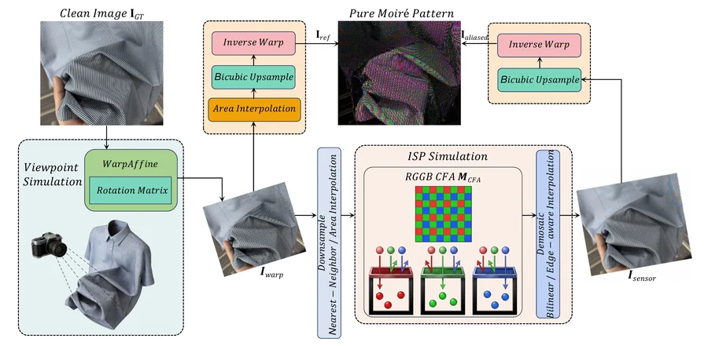

About me
I am a first-year master's student at Tianjin University. I began my research in 2026, with a particular focus on computer vision.
Education
Tianjin University · Master's
- Computer Science and Technology [推免], Sep. 2026 – Present
- Advisor: Prof. Xiaojie Guo
- Computer Science and Technology [ACM 班], Sep. 2022 – Jun. 2026
- GPA: 4.16/5.00 | Rank: 1/131
News
Attending ECCV 2026 @ Malmö, Sweden.
Participated in the BAAI Community ECCV 2026 Preview Seminar, Beijing.
Experiences

Algorithm Intern @ Amigos Robot
Apr. 2026 – Jul. 2026
Publications

Fabric Image Demoiréing Benchmark from Synthesis to Restoration
ECCV 2026